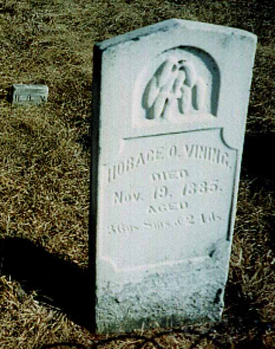
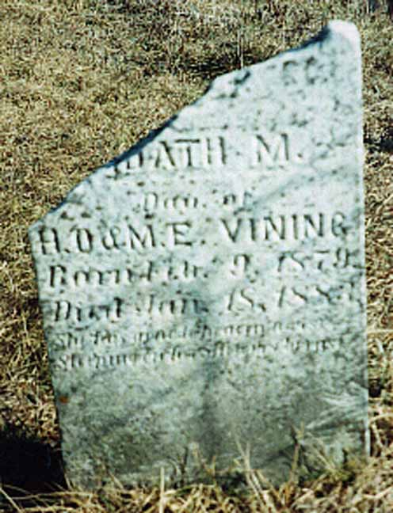

Documentation for Horace Oscar Vining - Martha Harrison Chapman
Death Data
Fern (Alexander) Vining, Horace Oscar Vining's granddaughter-in-law, says in a letter written on 10 October 1966 that he was killed by a bull. Note that his death was just over a month before his last child was born.
Gravestone for Horace Oscar Vining, in Vining Cemetery, Old Frontenac, Goodhue County, Minnesota (from Find A Grave):

Gravestone for Edath M. Vining, daughter of Horace Oscar Vining and Martha Harrison (Chapman) Vining, in Vining Cemetery, Old Frontenac, Goodhue County, Minnesota (from Find A Grave):
